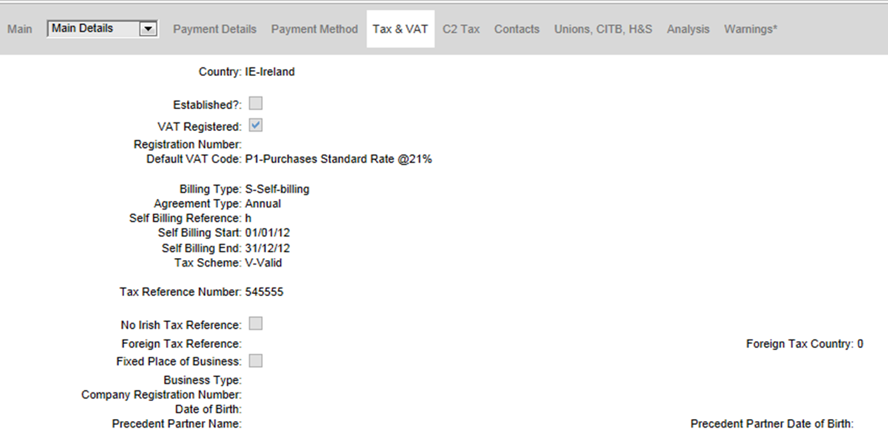

Under the RCT scheme, you need to record additional details about subcontractors so that this information can be used for electronic contract notification and payment notification.
To enter subcontractors RCT details:
- Go to Subcontractor Maintenance.
- Enter a new subcontractor record as normal or open an existing record.

- On the Tax & VAT tab fill in the following details:
- Tax Scheme:
- For subcontractors outside the scope of RCT, enter X (Exempt).
- If mandatory details for processing the subcontractor with RCT are not yet available, enter U (Unknown).
- For all other subcontractors, enter V (Valid).
- Tax Reference Number (also known as PPSN). If the subcontractor does not have an Irish tax reference, leave this blank and the No Irish Tax Reference box. You will then need to fill in the foreign tax reference details and various other fields depending on the business type of the subcontractor. These will be used in electronic contract notifications for this subcontractor.
- Fixed Place of Business. This box applies to all subcontractors and is used in electronic contract notifications for this subcontractor.
- Ongoing Contract?: If the subcontractor has an ongoing contract which has already been notified to Revenue (see Ongoing Contracts), this box and fill in the following two fields:
- Contract Reference Number - the contract ID as advised by Revenue.
- Contract End Date - the end date of the contract. This and the Contract Reference Number will be the defaults on all new subcontracts for the subcontractor.
If the ongoing contract is to be notified electronically using , then the Ongoing Contract box but leave the Contract ID blank. The start and end date fields can either be filled in here or on the Contract Notification Workbench later in the process.
To update the RCT details of existing subcontractors, you can also use Subcontractor RCT Details Review/Update (see eRCT - Updating Old Subcontractors).